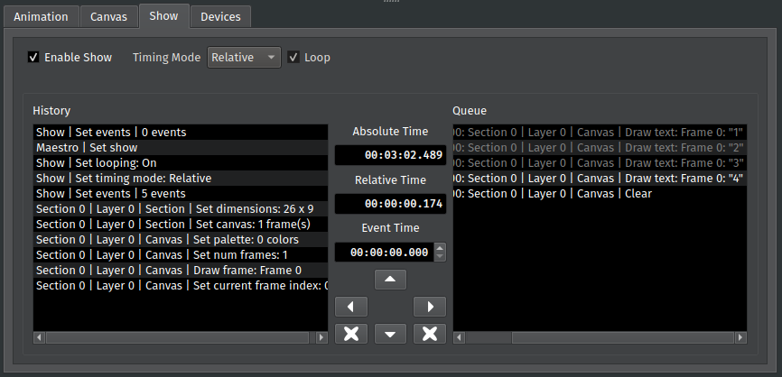

Show Tab
The Show tab lets you queue actions to run at a later point in the program’s runtime.
{kind=link}
Every action performed in PixelMaestro Studio generates an Event, which appears in the History. Adding an Event to the Queue, along with an Event Time, schedules the Event to run once either the Absolute Time or Relative Time exceeds the Event Time. Events that have already ran appear gray, while pending events appear white.
Selecting a Timing Mode
The Timing Mode determines how the Show tracks time. Absolute Time tracks the total amount of time that the Maestro has been running, and Relative Time tracks the amount of time since the last Event ran.
Looping
When looping is enabled, the Show will jump back to the first Event after running the last Event in the Queue. This is only available while relative time is enabled. To enable looping, check the Loop box.
Adding Events to the Show
In order to run an Event in a Show, you need to add it to the Queue. The Queue lists every Event that is scheduled to run in the Show. As soon as an Event is added to the Queue, it is immediately scheduled to run.
To add an Event to the Show, select one or more Events in the History. Enter the time you want the Event(s) to run in the Event Time box. As a convenience, the Absolute Time and Relative Time boxes show their respective elapsed times. Click the right arrow to add the Event(s) to the Queue.
To remove an Event from the Queue, select the Event(s) in the Queue and click the left arrow. To move Event(s) up or down in the Queue, select the Event(s) that you want to reorder and click the up or down arrows.
To completely clear either the History or Queue of its Events, click the X button next to either list.